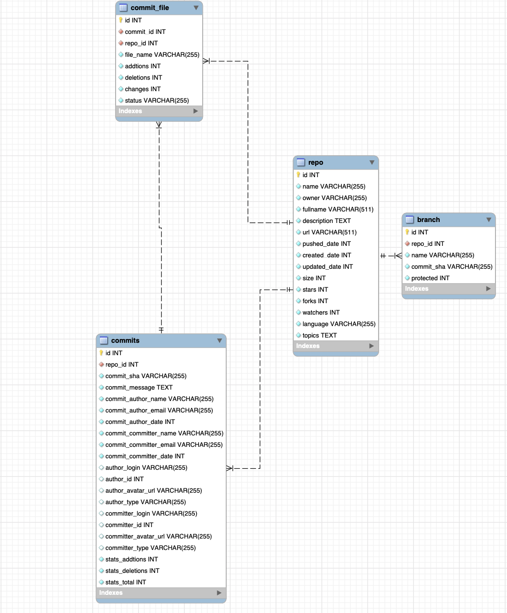

Create the database¶
In this project, I will be using the GitHub API to create a MySQL database.
To begin, I first put together an entity relationship diagram in order to map the relationships between the tables.
Pieces of this project have been adapted from the tutorial “Consuming the GitHub API v3 and load the data into SQLite database.”

Setup connection¶
We first need to set up a connection to MySQL via the mysql.connector package. In order to protect the credentials of the database, I have used environment variables. The only steps taken within MySQL are
import mysql.connector
import os
from dotenv import load_dotenv
load_dotenv()
True
mysql_user = os.getenv("MYSQL_USER")
mysql_pass = os.getenv("MYSQL_PASS")
cnx = mysql.connector.connect(user=mysql_user, password=mysql_pass,
host='127.0.0.1',
database='final_proj')
Create tables¶
Using data definition language, we can create different tables for our database. We will create repo, branch, commits, and commit_file tables to look more deeply into data gathered on different repositories.
ddl = """
CREATE TABLE IF NOT EXISTS repo(
id integer PRIMARY KEY,
name VARCHAR(255) NOT NULL,
owner VARCHAR(255) NOT NULL,
fullname VARCHAR(511) NOT NULL,
description TEXT NOT NULL,
url VARCHAR(511) NOT NULL,
pushed_date INTEGER NOT NULL,
created_date INTEGER NOT NULL,
updated_date INTEGER NOT NULL,
size INTEGER NOT NULL,
stars INTEGER NOT NULL,
forks INTEGER NOT NULL,
watchers INTEGER NOT NULL,
language VARCHAR(255) NOT NULL,
topics TEXT NOT NULL
);
CREATE TABLE IF NOT EXISTS branch(
id integer PRIMARY KEY,
repo_id INTEGER NOT NULL,
name VARCHAR(255) NOT NULL,
commit_sha VARCHAR(255) NOT NULL,
protected INTEGER NOT NULL,
FOREIGN KEY (repo_id) REFERENCES repo (id)
);
CREATE TABLE IF NOT EXISTS commits(
id integer PRIMARY KEY,
repo_id INTEGER NOT NULL,
commit_sha VARCHAR(255) NOT NULL,
commit_message TEXT NOT NULL,
commit_author_name VARCHAR(255) NOT NULL,
commit_author_email VARCHAR(255) NOT NULL,
commit_author_date INTEGER NOT NULL,
commit_committer_name VARCHAR(255) NOT NULL,
commit_committer_email VARCHAR(255) NOT NULL,
commit_committer_date INTEGER NOT NULL,
author_login VARCHAR(255) NULL,
author_id INTEGER NULL,
author_avatar_url VARCHAR(255) NULL,
author_type VARCHAR(255) NULL,
committer_login VARCHAR(255) NULL,
committer_id INTEGER NULL,
committer_avatar_url VARCHAR(255) NULL,
committer_type VARCHAR(255) NULL,
stats_addtions INTEGER NOT NULL,
stats_deletions INTEGER NOT NULL,
stats_total INTEGER NOT NULL,
FOREIGN KEY (repo_id) REFERENCES repo (id)
);
CREATE TABLE IF NOT EXISTS commit_file(
id integer PRIMARY KEY,
commit_id INTEGER NOT NULL,
repo_id INTEGER NOT NULL,
file_name VARCHAR(255) NOT NULL,
addtions INTEGER NOT NULL,
deletions INTEGER NOT NULL,
changes INTEGER NOT NULL,
status VARCHAR(255) NOT NULL,
FOREIGN KEY (commit_id) REFERENCES commits (id),
FOREIGN KEY (repo_id) REFERENCES repo (id)
);
"""
cursor = cnx.cursor(dictionary=True)
cursor.execute(ddl)
cnx.close()
Conclusion¶
Success! :D